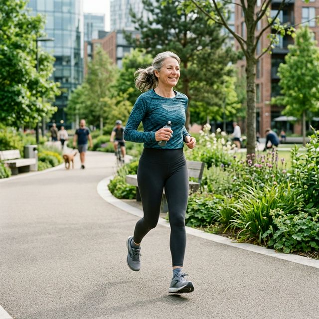
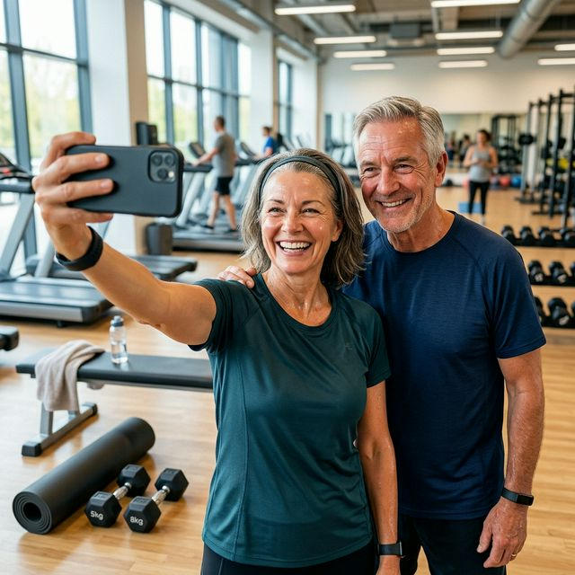
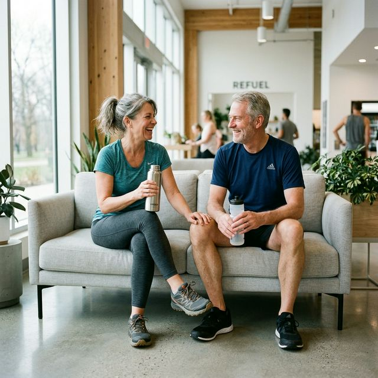

Jeśli masz ponad 50 lat i boli Cię kolano — prawdopodobnie słyszałeś od kogoś: "przestań biegać, niszczysz sobie stawy." A może sam sobie to mówisz. Otóż nauka ma w tej sprawie zupełnie inne zdanie. I to zdanie może Cię zaskoczyć.
Mit, który żyje od dekad — i który nauka właśnie obaliła
Przez lata bieganie kojarzyło się z "zużywaniem" stawów. Logika wydawała się prosta: kolano to mechanizm, każdy mechanizm się zużywa, a bieganie przyspiesza to zużycie. To intuicyjne. To też nieprawda.
W ciągu ostatnich kilkunastu lat przeprowadzono dziesiątki dużych badań naukowych — setki tysięcy uczestników, wieloletnie obserwacje, zdjęcia rentgenowskie, rezonanse magnetyczne. I wyniki były zaskakujące dla wszystkich, którzy wierzyli w teorię "zużywania kolan".
Liczby, które mówią same za siebie
Ludzie, którzy nie biegają, mają WYŻSZE ryzyko bólu kolan i choroby zwyrodnieniowej niż rekreacyjni biegacze. Siedzący tryb życia — niebieganie — jest problemem.

| Grupa | Ryzyko artrozy kolana / biodra | Co to oznacza |
|---|---|---|
| Rekreacyjni biegacze | 3,5% | Najniższe ryzyko ze wszystkich grup |
| Osoby niećwiczące | 10,2% | Prawie 3x wyższe niż u biegaczy |
| Wyczynowi sportowcy | 13,3% | Najwyższe ryzyko — intensywność ma znaczenie |
Widzisz ten wzorzec? Ryzyko nie rośnie liniowo wraz z bieganiem — wyraźniej zmienia się dopiero przy wyczynowym poziomie intensywności. Rekreacyjny bieg, 3-4 razy w tygodniu, w rozsądnym tempie, u wielu osób nie wygląda na strefę zagrożenia.
Dlaczego bieganie może chronić kolana — mechanizm
To co dzieje się w kolanie podczas biegu jest bardziej skomplikowane niż "ścieranie chrząstki". Chrząstka stawowa nie ma własnego ukrwienia — odżywia się przez płyn stawowy, który jest wpompowywany do chrząstki właśnie podczas ruchu i obciążenia.
Innymi słowy: kolano potrzebuje ruchu, żeby się odżywiać. Bezruch to nie oszczędzanie — to głodzenie.
Regularny ruch stymuluje produkcję płynu stawowego, wzmacnia mięśnie wokół kolana (które odciążają staw), poprawia propriocepcję — czyli czucie głębokie, dzięki któremu kolano "wie" jak się ustawić przy każdym kroku.
A co jeśli kolano JUŻ boli? Szczera odpowiedź.
Tu musimy być uczciwi — bo to jest pytanie, które zadaje sobie wiele osób po 50-tce. I odpowiedź jest bardziej złożona niż "biegaj, będzie dobrze". Ważne jest, aby rozróżnić rodzaje bólu.
Rodzaje bólu kolana — nie każdy jest taki sam
- Ból mięśniowy wokół kolana (uda, łydka) po długim biegu lub po przerwie — normalny, przemija w 24-48 godzin. Możesz biegać.
- Ból pod rzepką lub po jej bokach (runner's knee) — często wynika ze złej techniki lub zbyt szybkich postępów. Warto wtedy zwolnić i sprawdzić, czy nie popełniasz typowych błędów treningowych.
- Ból wewnątrz stawu, obrzęk, trzaskanie — to sygnał do konsultacji z ortopedą. Nie biegaj bez diagnozy.
- Ból zwyrodnieniowy — tu nauka mówi wyraźnie: umiarkowany ruch jest lepszy niż bezruch, ale program powinieneś ustalić ze specjalistą.
Co naprawdę niszczy kolana — lista bez owijania w bawełnę
Skoro bieganie nie jest głównym winowajcą, to co nim jest? Badania wskazują na kilka kluczowych czynników:
- Nadwaga i otyłość — każdy dodatkowy kilogram to potężne obciążenie przy każdym kroku. To największy wróg Twoich stawów.
- Siedzący tryb życia — słabe mięśnie nie stabilizują kolana, co prowadzi do nierównomiernego obciążenia chrząstki.
- Wcześniejsze urazy — dawne kontuzje zwiększają ryzyko zmian niezależnie od aktywności.
- Brak adaptacji — rzucanie się na głęboką wodę (np. 50km tygodniowo bez bazy) to prosta droga do problemów.
Jak biegać po 50-tce żeby kolana były wdzięczne
Bieganie po 50-tce to nie bieganie w wersji dla początkujących. To bieganie z głową — z szacunkiem dla tego, czego ciało potrzebuje.
- Zacznij wolno — 20-25 minut truchtu, 3 razy w tygodniu. Daj tkankom czas na adaptację.
- Technika lądowania — ląduj pod biodrem, środkową częścią stopy. Skrócony krok zmniejsza siłę uderzenia o podłoże.
- Wzmocnij mięśnie — siłownia po 50-tce (przysiady, wykroki) to najlepsza polisa ubezpieczeniowa dla Twoich kolan.
- Zadbaj o regenerację — dobrej jakości sen po 50-tce to moment, kiedy Twoje stawy faktycznie się naprawiają.
- Dieta to fundament — odpowiednia dieta po 50-tce wspiera walkę ze stanami zapalnymi.

Na koniec — bo to jest najważniejsze
Ciekawostka: w badaniu na 3804 maratończykach (średnio każdy ukończył prawie 10 maratonów!) nie znaleziono związku między liczbą przebiegniętych kilometrów a ryzykiem artrozy. Winowajcami były geny, waga i stare kontuzje, a nie pasja do biegania.

Zacznij. Powoli. Mądrze. Z szacunkiem dla ciała — i z zaufaniem do tego, do czego ciało jest stworzone. Kolana zwykle lepiej reagują na rozsądnie dawkowany ruch niż na bezruch.
Źródła
- [1] Dhillon, J. et al. (2023). Effects of Running on the Development of Knee Osteoarthritis: An Updated Systematic Review at Short-Term Follow-up.
- [2] Alentorn-Geli, E. et al. (2017). The Association of Recreational and Competitive Running With Hip and Knee Osteoarthritis: A Systematic Review and Meta-analysis. JOSPT, 47(6), 373-390.
- [3] Voinier, D., White, D.K. (2024). Walking, Running, and Recreational Sports for Knee Osteoarthritis: An Overview of the Evidence. European Journal of Rheumatology.
- [4] Hartwell, M.J. et al. (2024). Does Running Increase the Risk of Hip and Knee Arthritis? A Survey of 3804 Marathon Runners.
- [5] Lo, G.H. et al. (2017). History of Running Is Not Associated with Higher Risk of Symptomatic Knee Osteoarthritis: A Cross-Sectional Study from the Osteoarthritis Initiative.
- [6] Shmerling, R.H. (2026). Does running cause arthritis? Harvard Health Publishing.